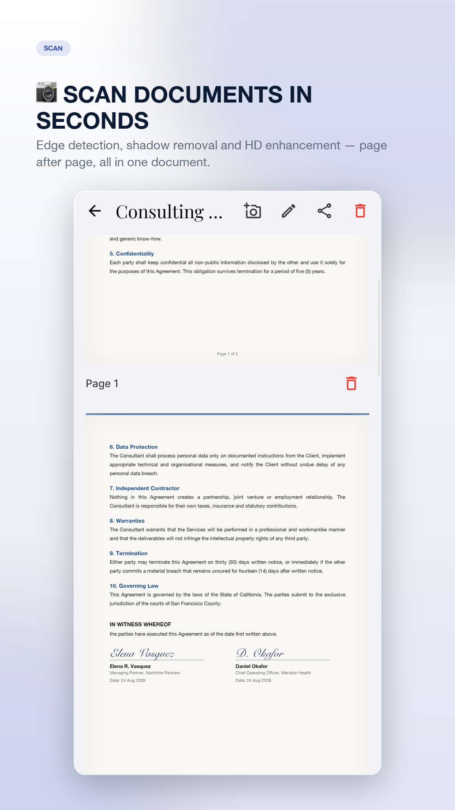
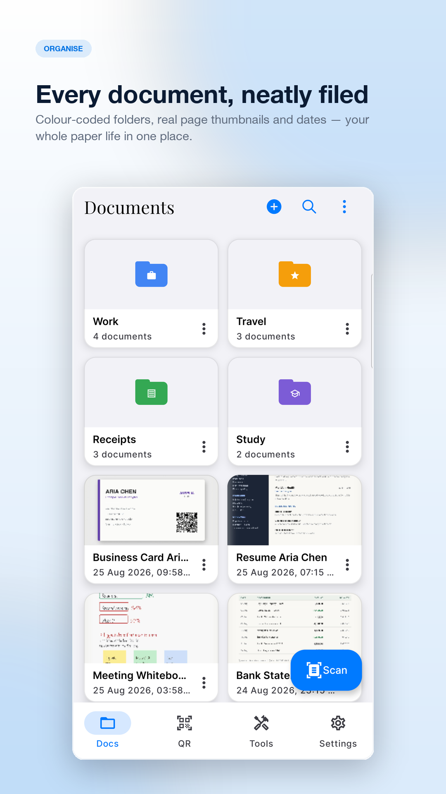
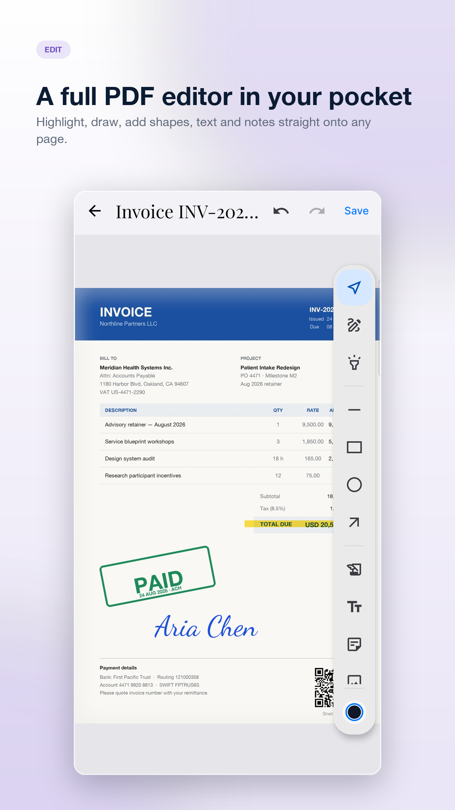
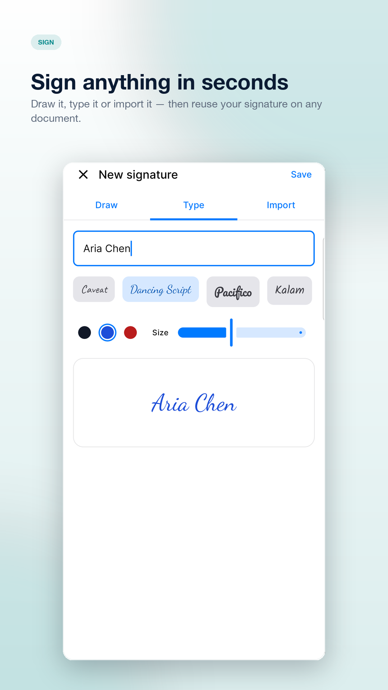
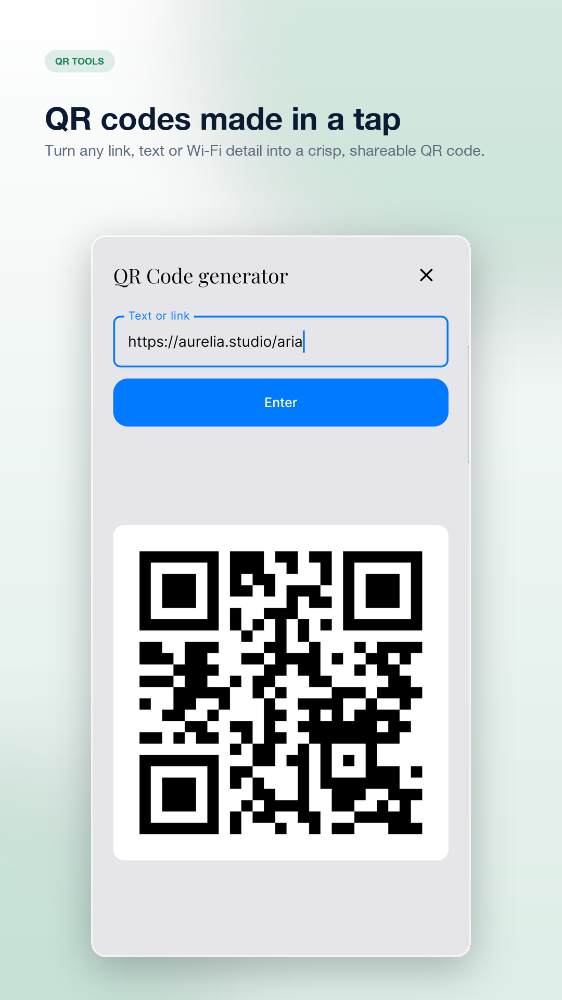
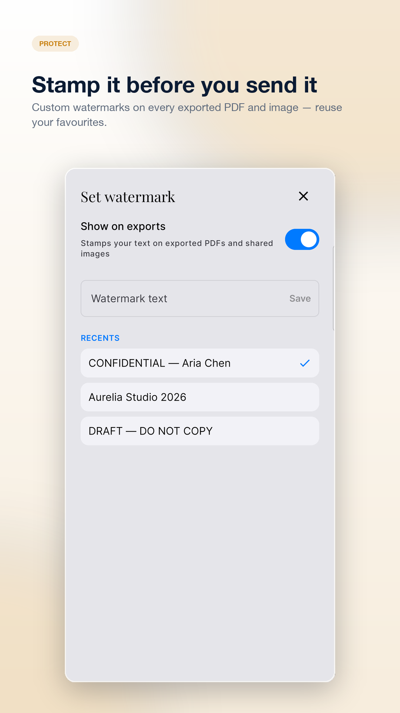
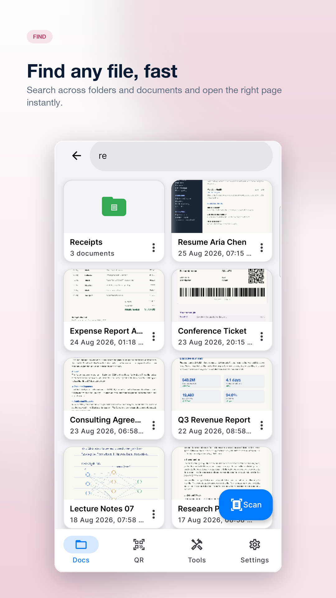
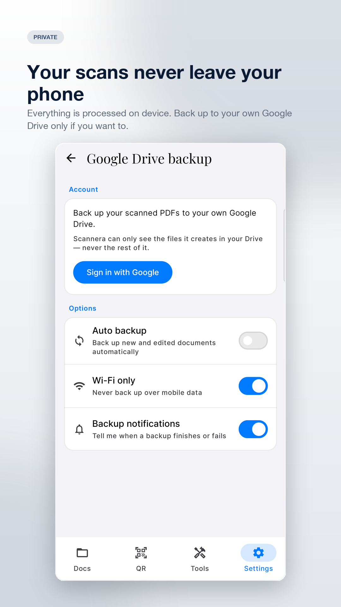

Scannera — private, offline document scanner for Android
Scan smarter. Stay private.
Scannera is an offline-first document scanner for Android that lets you scan documents, create multi-page PDFs, extract text with on-device OCR, annotate and sign PDFs, read and generate QR codes and barcodes, and back up documents to your own Google Drive. Scanning, editing and text recognition all run on your device.

Scan, edit, protect, share
Capture contracts, receipts, whiteboards and IDs — then run OCR, annotate, sign, watermark and export them without ever leaving the app.
Document scanner — automatic edge detection
Finds page borders instantly, corrects perspective skew and removes shadows. Dedicated modes for documents, agreements, ID cards, licences, passports and business cards.
PDF scanner — multi-page batch scanning
Capture page after page in one session and export them as a single PDF. Five filters — Original, Grayscale, B&W, Magic Color and Auto Enhance — sharpen contrast and readability.
PDF editor — annotate your documents
Draw, highlight, add text, shapes, arrows, dates, images and sticky notes directly on your scans — or on PDFs you import from your device.
QR & barcode scanner and generator
Instant on-device camera recognition for every standard QR code and barcode format — plus a generator that turns any text or link into a QR code.
Custom watermarks
Stamp invoices, contracts and confidential papers with your own text on exported PDFs and shared images before you send them anywhere.
Google Drive backup — optional
Turn it on and your PDFs back up to your Google account, automatically and on Wi-Fi only if you prefer. Off by default, and Scannera can only see the files it creates in your Drive.
OCR — extract text from your scans
Text recognition runs offline on your device using a bundled model, so you can pull the words out of a scan and share or paste them as plain text.
App Lock — keep the app private
Require your device screen lock — PIN, pattern, password or fingerprint — before Scannera will open.
Import & organise
Bring in existing PDFs and images from your device, sort everything into colour-coded folders, and search your documents by name.
Your documents never leave your phone
Passports, tax forms, medical records, contracts — the things you scan are exactly the things you shouldn't have to hand to a stranger's server. Scannera keeps the work on your device and asks nothing of you in return: no account, no upload, and a one-time Pro purchase instead of a subscription.
Private by design
Edge detection, filtering, OCR, annotation and PDF export all run locally on your phone's own hardware.
Accounts required
No email, no account, no profile. Install the app and start scanning in seconds.
Works offline
Scanning, OCR, annotation, signing and export all work in airplane mode. Nothing is uploaded unless you switch on Google Drive backup.
Built to feel effortless
Light and dark themes, fast rendering, and a layout that stays out of your way.







Pay once. Keep it forever.
No subscription, no renewals, no per-scan limits. One purchase unlocks everything, permanently.
Unlock Scannera Pro
One-time payment · Lifetime access · Current price shown in the app
- Unlimited batch scanning
- Watermark-free exports & custom watermarking
- QR code & barcode generator
- Full PDF annotation suite
- Automated Google Drive backup
- Unlimited QR code generation
Questions, answered
What is Scannera?
Scannera is a productivity app for Android that turns your phone camera into a document scanner. It scans single or multi-page documents into PDFs, extracts text with on-device OCR, lets you annotate and sign PDFs, reads and generates QR codes and barcodes, applies custom watermarks, organises everything into folders, and can optionally back up to your own Google Drive. It runs on Android 8.0 and later.
Does Scannera work offline?
Yes. Scanning, filtering, OCR, annotation, signing, watermarking and PDF export all work with no internet connection. A connection is only needed to purchase Pro or to sync Google Drive backups.
Are my scans uploaded anywhere?
No. Scanning, editing, filtering, text recognition and PDF export all happen on your device. The only exception is Google Drive backup, which is off by default — when you turn it on, files go to your own Google account and nowhere else. Anonymous crash reports and usage analytics are sent, never your documents.
Does Scannera support OCR?
Yes. Text recognition uses a Latin-script model bundled with the app, so it runs offline on your device. Once a page is recognised you can share or paste the extracted text as plain text. Note that document search matches document and folder names, not the text inside your scans.
Can Scannera create PDF documents?
Yes. Scanned pages are exported as PDFs, and you can also share a page as an image. You can import existing PDFs and images from your device and re-export them after editing.
Can Scannera scan multiple pages into one document?
Yes. Batch mode captures page after page in a single session and reviews them together at the end, then exports them as one multi-page PDF. Free scans are limited to a set number of pages at a time; Pro removes that limit.
Can I sign documents with Scannera?
Yes. You can draw a signature, type one, or photograph an existing signature on white paper and have the background removed automatically. Saved signatures live in a library and can be placed on any document.
Can Scannera scan QR codes and barcodes?
Yes. The camera recognises all standard QR code and barcode formats on device. Scannera can also generate a QR code from any text or link.
Does Scannera support Google Drive backup?
Yes, and it is optional and off by default. When enabled, scanned PDFs back up to your own Google account — automatically, and over Wi-Fi only if you prefer. Scannera requests access only to the files it creates in your Drive, so it cannot see the rest of it.
Do I need an account to use Scannera?
No. There is no sign-up, no email and no profile. Install it and start scanning immediately. A Google sign-in is only needed if you choose to turn on Drive backup.
Does Scannera require a subscription?
No. Scannera is free to use, and Scannera Pro is a single one-time purchase through Google Play with lifetime access, restorable on any device signed in to the same Google Play account. There are no recurring charges.
What can it scan?
Multi-page contracts and reports, receipts and invoices, whiteboards and lecture notes, business cards, warranty certificates, and identity documents — there are dedicated capture modes for documents, agreements, ID cards, driving licences, green cards, passports and business cards.
Your documents, your device.
Join the professionals, students and businesses who scan without handing their paperwork to the cloud.